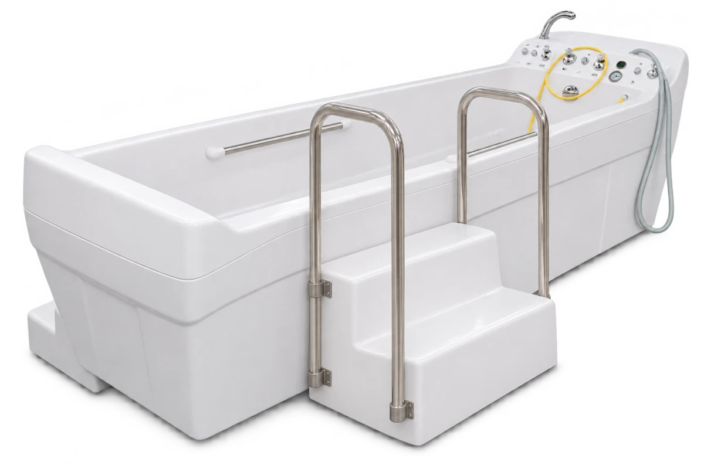
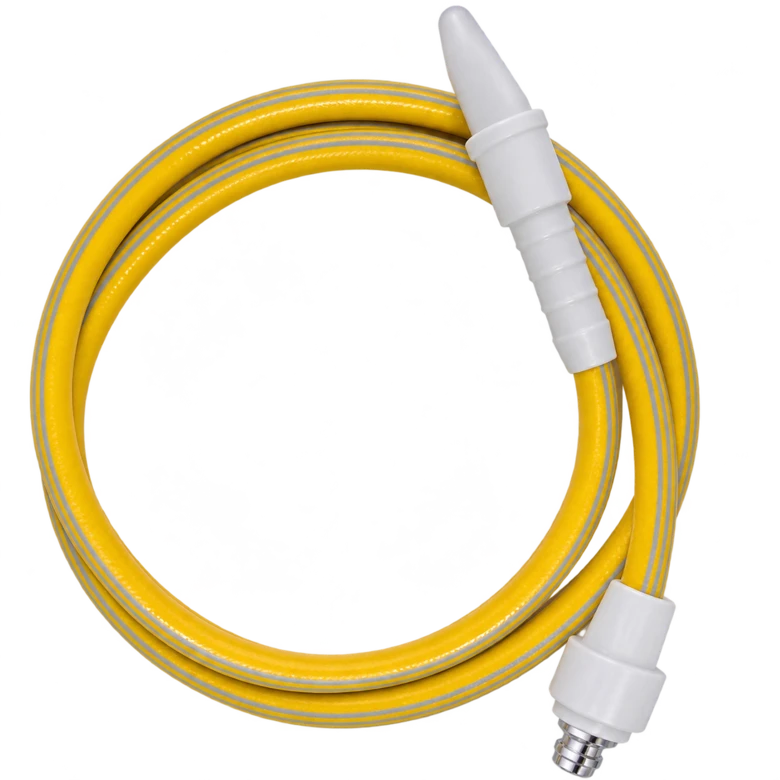

Водолечение и бальнеотерапия
Водные процедуры для мышечного расслабления, восстановления после нагрузок и общего оздоровления организма.



Гидромассажная ванна и добавки45 мин5 100 ₽
Суть метода
Подводный душ-массаж — сочетание тёплой ванны и направленного массажного воздействия водяной струёй. С помощью специального шланга и сменных насадок специалист регулирует силу, направление и характер воздействия на различные группы мышц.
В отличие от обычной гидромассажной ванны с неподвижными форсунками, такая технология позволяет индивидуально прорабатывать выбранные участки тела.
Для чего применяется
Для снятия мышечного напряжения, уменьшения скованности, восстановления после физических нагрузок, поддержки местного кровообращения и общего расслабления.
Вода одновременно выполняет две функции: поддерживает тело, уменьшая нагрузку на опорно-двигательный аппарат, и служит инструментом механического воздействия на мышцы и мягкие ткани.
Дополнительные компоненты ванны
- Прованские травыАроматическое сопровождение и расслабление
- 1 100 ₽
- КальцийМинеральная добавка
- 1 100 ₽
- МагнийМинеральная добавка
- 1 100 ₽
- Морская сольМинеральное обогащение воды
- 1 100 ₽
- «Живая вода»Специально подготовленная вода
- 1 600 ₽
- «Талассо Магнезиум»Концентрат (масло) морского магния, 500 мл; 5 мин по прайсу
- 7 000 ₽
Дополнительные компоненты подбираются с учётом выбранной программы и индивидуальной переносимости. Наличие минеральных веществ в воде само по себе не означает доказанного восполнения их дефицита в организме через кожу.
Подводный вакуумный массаж10 мин1 100 ₽
Суть метода
Подводный вакуумный массаж — технология механического воздействия на кожу и подкожные ткани с помощью специальной насадки, создающей область пониженного давления.
В отличие от классического гидромассажа, при котором струя воды оказывает давление на ткани снаружи, вакуумная насадка мягко втягивает их внутрь, обеспечивая другой характер массажного воздействия.
Процедура проводится в водной среде, сочетая свойства вакуумного массажа с тепловым воздействием воды.
Для чего применяется
- Локальная проработка кожи и подкожных тканей.
- Воздействие на подвижность и эластичность мягких тканей.
- Эстетические программы ухода за телом.
- Работа с отдельными косметическими проявлениями целлюлита; стойкий эффект не гарантирован.
- Дополнение программ гидромассажа.
Производитель Grand Cryo разработал собственную конструкцию насадки для проведения подводного вакуумного массажа. Исследования вакуумного массажа в целом показывают потенциальное влияние на механические свойства кожи, однако доказательная база непосредственно подводного варианта ограничена.
Ванна с водородом4 700 ₽
Суть метода
Водородная ванна — оздоровительная процедура с использованием специально подготовленной воды, обогащённой водородом.
Молекулярный водород представляет собой газ, состоящий из двух атомов водорода (H₂). Благодаря небольшому размеру молекул он способен проходить через биологические мембраны. Именно это свойство вызывает интерес исследователей в области клеточного обмена и защитных реакций организма. При этом количество водорода, которое действительно поступает в ткани при конкретной ванне, зависит от условий и не установлено для оборудования нашей клиники.
Для чего применяется
Водородные ванны используются в программах восстановительного отдыха, ухода за кожей и общего расслабления.
Научный интерес к молекулярному водороду связан с его потенциальным влиянием на окислительный стресс — состояние, при котором нарушается баланс между образованием химически активных соединений и естественными механизмами защиты клеток.
В небольших исследованиях водородных ванн наблюдалось более продолжительное сохранение тепла в отдельных участках тела после процедуры. Изучается также влияние на периферическое кровообращение.
Что важно знать
Исследования водородных ванн пока не позволяют утверждать, что они гарантированно восстанавливают клеточные структуры или предотвращают хронические заболевания.
Ванна Клеопатры7 000 ₽
Суть метода
Ванна Клеопатры — специализированная водная процедура, основанная на воздействии углекислого газа (CO₂) без инъекционного введения. Такой подход называют безинъекционной карбокситерапией.
Согласно описанию процедуры в нашей клинике, вода обогащается двумя газами — углекислым газом и молекулярным водородом.
Углекислый газ при контакте с кожей способствует расширению мелких кровеносных сосудов и изменению местного кровотока. В этом заключается один из основных физиологических принципов углекислых ванн.
Для чего применяется
- Стимуляция микроциркуляции — кровообращения в мельчайших сосудах.
- Поддержка местного кровоснабжения кожи.
- Эстетические программы ухода за телом.
- Создание условий для мышечного и психоэмоционального расслабления.
Углекислые ванны имеют собственную научную историю. В сравнительных исследованиях установлено, что вода, обогащённая углекислым газом, способна усиливать кожный кровоток по сравнению с обычной водой такой же температуры. Это не подтверждает автоматически преимущества сочетания двух газов в конкретной ванне.
Лечебный гидромассаж в «Живой воде»60 мин6 300 ₽
Суть метода
Эта процедура объединяет два направления водолечения: индивидуальный подводный душ-массаж и использование воды, подготовленной с помощью специальной электрохимической технологии.
При электролизе — обработке воды электрическим током — могут изменяться её физико-химические характеристики: кислотно-щелочные свойства, содержание растворённых газов и окислительно-восстановительный потенциал.
Окислительно-восстановительный потенциал (ОВП) — показатель, характеризующий способность среды участвовать в химических реакциях передачи электронов. Он описывает свойства воды, а не степень оздоровления организма.
Для чего применяется
Основное физиологическое воздействие обеспечивает сочетание тепла, гидростатического давления и направленного массажа.
Процедура используется для мышечного расслабления, уменьшения скованности, восстановления после физических нагрузок, работы с мягкими тканями и поддержки местного кровообращения.
Специальная подготовка воды является дополнительной особенностью процедуры, потенциальные эффекты которой продолжают изучаться.
Чем отличается от обычной водородной ванны?
Водородная ванна представляет собой преимущественно пассивную водную процедуру. Лечебный гидромассаж в «Живой воде» дополнительно включает целенаправленное механическое воздействие водяной струёй, которое специалист подбирает в соответствии с индивидуальной задачей.
Пантовая ванна «Целебная сила Алтая»6 900 ₽
Суть метода
Пантовые ванны — особое направление алтайской бальнеотерапии, объединяющее традиции оздоровительного отдыха с использованием современных составов на основе пантового сырья.
Панты — молодые, ещё не окостеневшие рога марала. В период роста они представляют собой живую, активно кровоснабжаемую ткань, содержащую белки, аминокислоты, минеральные вещества и различные регуляторные соединения.
Для приготовления ванны используется специальный пантовый состав.
Для чего применяется
Пантовые ванны традиционно включаются в курортные программы восстановительного отдыха, направленные на снятие физической усталости, расслабление мышц и снижение психоэмоционального напряжения.
Сочетание комфортной температуры воды, механической разгрузки тела и специального пантового компонента формирует особый формат оздоровительной процедуры, связанный с природными ресурсами Алтая.
Историческая особенность
Использование пантового сырья имеет давнюю историю в традиционной медицине народов Азии. На Алтае пантовые процедуры стали одним из узнаваемых направлений санаторно-курортного отдыха.
Биологическая активность самого пантового сырья представляет научный интерес. В нём изучаются в том числе структурные белки и факторы роста — соединения, участвующие в регуляции роста клеток. Однако наличие таких веществ ещё не доказывает их проникновение через кожу и системное воздействие во время ванны. Качественных независимых клинических исследований именно пантовых ванн недостаточно.
Суть метода
Водолечение — одно из традиционных направлений курортной и восстановительной медицины, которое благодаря современному оборудованию приобрело новые возможности.
В основе процедуры лежит сочетание нескольких природных факторов: температуры воды, её выталкивающей силы, давления на поверхность тела и направленного массажного воздействия.
В тёплой воде снижается механическая нагрузка на позвоночник и суставы, расслабляются мышцы. Специальные насадки позволяют специалисту целенаправленно воздействовать на отдельные участки тела, регулируя силу водяной струи или вакуумного массажа.
Дополнительные возможности открывает бальнеотерапия — применение минеральных вод и лечебных ванн. В нашем направлении водолечения используются также растительные, газовые и другие специально подготовленные компоненты.
В нашей клинике представлены различные программы водолечения — от классического гидромассажа до специализированных водородных и традиционных алтайских пантовых ванн.
Для чего применяется
Снятие мышечного напряжения
Тепло и направленное воздействие водяных струй создают условия для расслабления напряжённых мышц, уменьшения скованности и дискомфорта после длительных статических и физических нагрузок.
Активизация местного кровообращения
Под воздействием тепла поверхностные кровеносные сосуды расширяются. В сочетании с массажем это способствует изменению кровотока в коже и мягких тканях.
Разгрузка позвоночника и суставов
Выталкивающая сила воды уменьшает нагрузку, которую испытывает опорно-двигательный аппарат. Это позволяет мышцам и суставам отдыхать в условиях частичной механической разгрузки.
Поддержка венозного оттока и уменьшение отёчности
Давление окружающей воды способствует перераспределению жидкости и венозному возврату. При правильно подобранной процедуре это может помочь уменьшить ощущение тяжести и отёчности конечностей, если их причина допускает такое воздействие.
Восстановление после физических нагрузок
Водные процедуры могут дополнять программы восстановления после тренировок, продолжительных прогулок, горнолыжных нагрузок и активного отдыха, помогая уменьшить субъективное ощущение мышечной усталости.
Уход за кожей и мягкими тканями
Гидромассаж, вакуумные технологии и специальные компоненты ванн используются в программах эстетического ухода, направленных на улучшение внешнего вида кожи и уменьшение выраженности отдельных косметических проявлений.
Психоэмоциональное восстановление
Комфортная температура воды, воздействие на кожные рецепторы и состояние физической разгрузки создают благоприятные условия для снижения нервного напряжения, глубокого отдыха и расслабления.
Исследования водных методов восстановления наиболее убедительно раскрывают их возможности в отношении отдельных болевых синдромов и функционального состояния опорно-двигательного аппарата. При этом результаты разных видов водолечения не всегда взаимозаменяемы.
Физиологические механизмы
Термическое воздействие
Тёплая вода влияет на тонус поверхностных сосудов, способствует расслаблению мышц и уменьшению ощущения скованности.
Гидростатическое давление
Окружающая тело вода оказывает давление на погружённые ткани: чем глубже находится участок тела, тем выше давление. Это влияет на распределение жидкости и венозный возврат — движение крови по венам к сердцу.
Выталкивающая сила воды
Вода поддерживает тело и уменьшает его кажущийся вес, благодаря чему снижается механическая нагрузка на позвоночник и суставы.
Механическое воздействие
Направленные струи и вакуумные насадки позволяют специалисту избирательно воздействовать на мягкие ткани.
Химический состав воды
Растворённые газы, соли и специальные компоненты определяют дополнительные особенности отдельных программ бальнеотерапии.
Сенсорное воздействие
Тепло, прикосновение воды и ритмичное массажное воздействие создают условия для снижения нервного напряжения.
Как проходит процедура
Перед началом специалист уточняет выбранную программу, состояние гостя и индивидуальную задачу процедуры.
Гость комфортно располагается в ванне. В зависимости от выбранного вида водолечения специалист подбирает температуру воды, дополнительные компоненты, зоны и интенсивность массажного воздействия.
При гидромассаже специалист направляет водяную струю на выбранные участки тела. При вакуумном массаже используется специальная насадка. В специализированных ваннах основное воздействие связано с температурой и составом воды.
После завершения процедуры рекомендуется спокойно выйти из ванны и некоторое время отдохнуть.
Подготовка
Специальной сложной подготовки не требуется. Перед процедурой необходимо сообщить специалисту о хронических заболеваниях, аллергических реакциях, недавних травмах и операциях.
Не рекомендуется посещать ванну сразу после обильного приёма пищи, употребления алкоголя или при плохом самочувствии.
Ограничения и противопоказания
Необходимо учитывать температуру воды, воздействие гидростатического давления, интенсивность массажа и состав дополнительных компонентов.
Особого внимания требуют острые воспалительные и инфекционные заболевания, лихорадка, нестабильные сердечно-сосудистые состояния, острые тромбозы, активные кровотечения, повреждения кожи и индивидуальная непереносимость компонентов ванны.
Для вакуумного массажа, углекислых и пантовых ванн предусмотрены дополнительные ограничения. При склонности к кровоподтёкам или приёме препаратов, снижающих свёртываемость крови, вакуумное воздействие требует отдельной оценки. Возможность проведения конкретной процедуры определяет медицинский специалист согласно инструкции оборудования, применяемого состава и состоянию гостя.
При головокружении, сердцебиении, одышке, боли или другом дискомфорте следует незамедлительно сообщить специалисту.
Частые вопросы
Чем профессиональный гидромассаж отличается от джакузи?
При профессиональном подводном массаже специалист регулирует направление и интенсивность струи, индивидуально воздействуя на определённые группы мышц и участки тела.
Какую ванну лучше выбрать после активного отдыха?
Для расслабления мышц после прогулок, тренировок и горнолыжных нагрузок можно рассмотреть классический гидромассаж при отсутствии противопоказаний. Выбор дополнительных компонентов зависит от индивидуальных предпочтений и рекомендаций специалиста.
Можно ли сочетать гидромассаж с вакуумным массажем?
Такая техническая возможность предусмотрена оборудованием. Необходимость дополнительного воздействия определяется индивидуально.
Чем отличаются ванна с водородом и ванна Клеопатры?
Основное отличие — газовый состав воды. В водородной ванне акцент сделан на водороде, а в ванне Клеопатры, согласно описанию клиники, используется сочетание углекислого газа и водорода.
Можно ли приобрести дополнительные компоненты для гидромассажа?
Да. В прейскуранте представлены минеральные и растительные добавки, специальные концентраты и подготовленная «Живая вода». Цены указаны внутри раздела гидромассажной ванны.
Можно ли похудеть с помощью гидромассажа?
Гидромассаж может дополнять эстетические программы и влиять на временную отёчность тканей, но сам по себе не является методом снижения жировой массы тела.
Научное обоснование
Водолечение и бальнеотерапия имеют многолетнюю историю применения в курортной и восстановительной медицине. Современные исследования изучают влияние водной среды, температурного воздействия, массажа и дополнительных компонентов на состояние организма.
Научные исследования и публикации
2026 — Влияние водных процедур на болевые ощущения
Систематический обзор и метаанализ Effects of water immersion therapy on pain посвящён оценке водной иммерсии (погружения в воду) как способа уменьшения боли. Результаты относятся к изучавшимся видам водных процедур и не являются доказательством эффективности каждой программы нашего курорта.
2020 — Бальнеотерапия и курортная медицина
Kamioka и соавторы обобщили систематические обзоры рандомизированных исследований бальнеотерапии и курортной терапии. В частности, изучались боль и функциональные ограничения. Методики и качество исследований различались, поэтому выводы нельзя автоматически переносить на все специальные добавки и ванны.
2016 — Физиологические эффекты вакуумного массажа
Moortgat и соавторы рассмотрели исследования влияния вакуумного воздействия на свойства различных слоёв кожи. Данные о подводном вакуумном массаже и долговременном косметическом результате ограничены.
2021 — Водородные ванны и терморегуляция
В исследовании с участием 24 здоровых добровольцев сравнивали сохранение тепла после водородной и обычной ванны при одинаковой температуре и длительности. В отдельных областях тела после водородной ванны тепло сохранялось дольше. Это небольшое физиологическое исследование, не доказательство системного омоложения или лечения заболеваний.
2018 — Углекислые ванны и местное кровообращение
В сравнительном исследовании изучались реакции кровообращения кожи и мышц при погружении ног в умеренно тёплую обычную и обогащённую углекислым газом воду. Работа подтверждает физиологическую значимость углекислого газа для местного кровотока, но не устанавливает эффективность конкретной комбинированной ванны.
2022 — Электрохимически подготовленная вода
Обзор LeBaron и соавторов рассматривает свойства воды, получаемой электролизом, растворённый молекулярный водород и интерпретацию окислительно-восстановительного потенциала. Он помогает разобраться в терминологии, но не является независимым клиническим испытанием ванны Grand Cryo или доказательством системного воздействия при купании.
Пантовые ванны
Биологические свойства пантового сырья и традиции его применения не заменяют клинические исследования готовой процедуры. Для пантовых ванн в данной редакции нет подтверждённого независимого исследования конкретного используемого состава. Не заявлять доказанное проникновение факторов роста через кожу, восстановление органов или лечение заболеваний.
Вывод. Общие физические эффекты водной среды и отдельные эффекты специальных методик изучены, но их выраженность и клиническая значимость зависят от режима, состояния человека и конкретного состава воды. Результаты одной технологии нельзя приписывать другой.